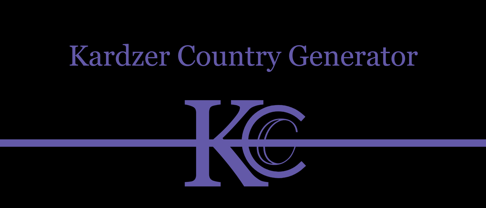

Since the name of a country and it's government don't tend to line up, and I haven't yet coded that in, the 'government code' might not line up with the country's name. So use your imagination if a country is technically an Autocracy but calls itself a Republic.
Code Key
AT:0
- A: Administrative - Defines the level at which the government controls its subsequent states or lack thereof
- T: Type - Defines who runs the nation (a king, a senate, etc.)
- 0: Tier - The amount of cultural diversity within a given country
Administrative
- A: Alliance - Intergovernmental organization recognized not as a single entity, but as a conglomerate of entities
- C: Conf - An alliance which, by contrast, is recognized as a single entity
- F: Federation - A confederation which has most of its power centralized
- U: Unitary - States exists, however they’re more a symbolic, cultural, or pseudo-administrative
- S: State - The government is one contiguous entity
Types
- Tr: Tribe - State based on pure community
- Cl: Clique - Military rule
- Th: Theocracy - Clerical rule
- Ty: Tyranny - Rule centered on one person
- Ol: Oligarchy - Group rule
- Re: Republic - A representative democracy
- De: Democracy - A pure democracy
- Dy: Dynasty - Hereditary rule
- Ci: Civitacracy - Ruled by its sub-level states
- Ec: Ecocracy - Ruled by the market
- Te: Technocracy - Ruled by AI
- An: Anarchy - Ruled by none
Tiers
- 0: Identity - Administration os symbolic, fake, or absent -
- 1: Tribe - Administration holds power over a single group of people
- 2: State - Most of the state is populated by one group, but other groups exist within it
- 3: Empire - Most of the state is populated by other groups
- 4: Nation - The subsequent groups of the state are overridden by a national identity